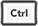

键盘快捷键
功能Windows
/ Linux
MacOSX
保存项目

CTRL + S（+ S）CMD + S（
+ S）
撤销CTRL + Z（
+ Z）CMD + Z（
+ Z）
重做CTRL + Z（ +
+
+ Z）CMD + Z（+
+ Z）
剪切CTRL + X（
+ X）CMD + X（
+ X）
复制CTRL + C（
+ C）CMD + C（
+ C）
粘贴CTRL + V（
+ V）CMD + V（
+ V）
删除Delete（
）Delete（
）
主页CTRL + ALT + H（+
+ H）CMD + ALT + H（+
+ H）
场景CTRL + ALT + S（+
+ S）CMD + ALT + S（+
+ S）
数据库CTRL + ALT + D（+
+ D）CMD + ALT + D（+
+ D）
脚本CTRL + ALT + C（+
+ C）CMD + ALT + C（+
+ C）
扩展CTRL + ALT + E（+
+ E）CMD + ALT + E（+
+ E）
语言配置CTRL + ALT + L（+
+ L）CMD + ALT + L（+
+ L）
分离实时预览CTRL + D（
+ D）CMD + D（
+ D）
重播实时预览CTRL + R（
+ R）CMD + R（
+ R）
重新启动实时预览CTRL + ALT + R（+
+ R）CMD + ALT + R（+
+ R）
查找CTRL + F（
+ F）CMD + F（
+ F）
查找下一个CTRL + G（
+ G）CMD + G（
+ G）
查找上一个CTRL + G（+
+ G）CMD + G（+
+ G）
替换CTRL + ALT + F（+
+ F）CMD + ALT + F（+
+ F）
全部搜索...CTRL + F（
+ F）CMD + F（
+ F）
生成 UIDCTRL + G（
+ G）CMD + G（
+ G）
插入新字符串CTRL + G（
+ U）CMD + G（
+ U）
播放CTRL + ALT + P（+
+ P）CMD + ALT + P（+
+ P）
全屏播放CTRL + P（
+ P）CMD + P（
+ P）
帮助CTRL + ?（
+ ?）CMD + ?（
+ ?） 脚本编辑器
键盘快捷键要查找完整的键盘快捷键列表，